auto.airstrike
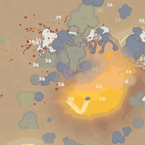
Vòng nét co vào và bóng đĩa thành Magic Circle Epic Toon báo điểm rơi.
Phase audit VFX 30/09/2026 (cập nhật lượt 2). Mọi vòng lan, vùng, cảnh báo và tia sét thoáng qua giờ là Epic Toon FX; các lớp tự vẽ bằng shader riêng (viền cứng, alpha phẳng) đã bỏ. GIF quay trong sandbox ở camera game, tốc độ 0.5× cho dễ nhìn, 34 skill bị ảnh hưởng. Ảnh "Trước" là một khung hình chụp trước khi sửa.
auto.airstrike
Vòng nét co vào và bóng đĩa thành Magic Circle Epic Toon báo điểm rơi.
auto.chainlightning
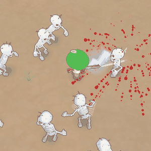
Tia zig-zag tự vẽ thành material sét của Epic Toon.
auto.emergency
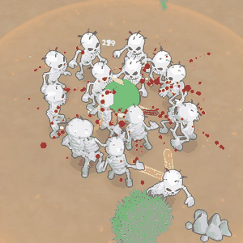
Vòng, đĩa đỏ và nét: bỏ. Nova lửa Epic Toon, sóng thứ hai cũng là Nova.
auto.firetrail
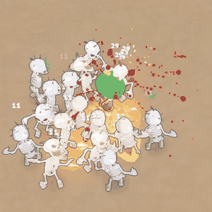
Đĩa cam tự chế dưới lửa: bỏ, còn Fire Field Epic Toon.
auto.flameburst
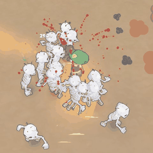
Nón nét tự chế: bỏ, còn Flamethrower Epic Toon.
auto.frostnova
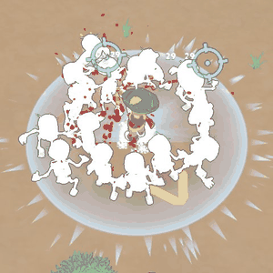
Dải đĩa băng và vòng nét: bỏ, chỉ còn Nova băng Epic Toon.
auto.gravity
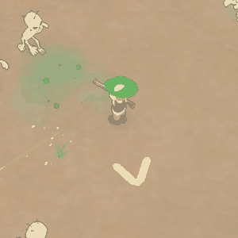
Vòng hút tím viền cứng và vòng nét co vào: bỏ, còn vortex Epic Toon.
auto.iceshards
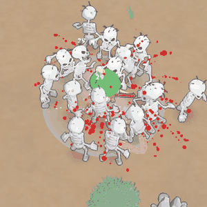
Vòng tự chế thành Nova băng Epic Toon.
auto.landmine
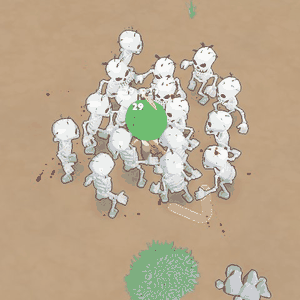
Vòng tự chế thành Nova Epic Toon theo màu.
auto.meteor
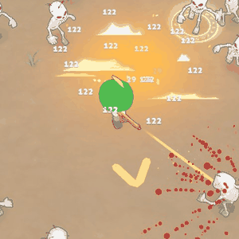
Đĩa cháy nâu tự chế: bỏ, còn Fire Field và vết nổ Epic Toon.
auto.ordnance
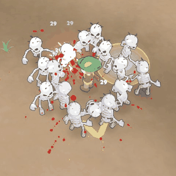
Như Airstrike.
auto.soulburst
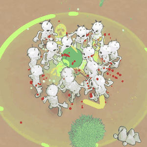
Vòng và nét tự chế: bỏ, chỉ còn Nova xanh Epic Toon.
auto.stomp
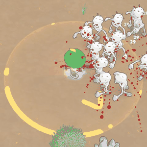
Vòng, đĩa và nét tự chế: bỏ, còn bụi và vết nứt Epic Toon.
auto.stormcloud
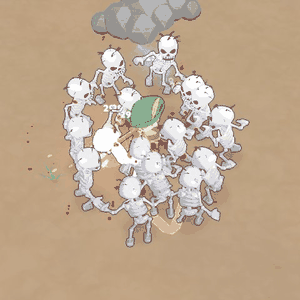
Tia sét dùng material Epic Toon, bỏ vòng nét.
auto.thorns
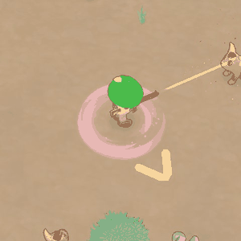
MỚI: vòng hồng đặc thay bằng Magic Field Epic Toon nhuộm hồng (xoáy mỏng, alpha mềm), theo người chơi và đúng bán kính.
auto.timewarp
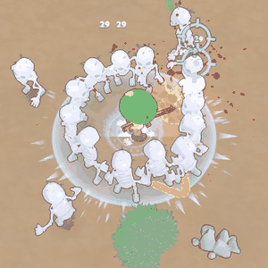
Vòng nét 12 m tự chế: bỏ. Vòng nổ là Nova Epic Toon.
auto.toxic
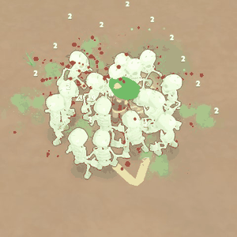
Dải đĩa xanh: bỏ, còn Stinky Cloud Epic Toon.
auto.turret
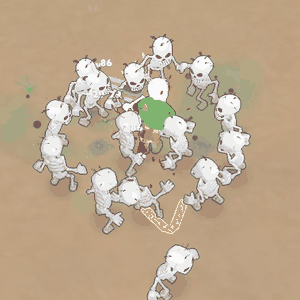
Đĩa lúc thả xuống: bỏ, còn Dust Epic Toon.
evo.absolutezero
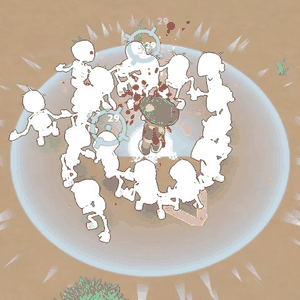
Như Frost Nova.
evo.carpetbomb
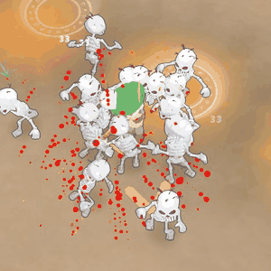
Như Airstrike.
evo.fortress
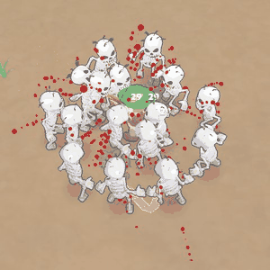
Như Turret.
evo.ironmaiden
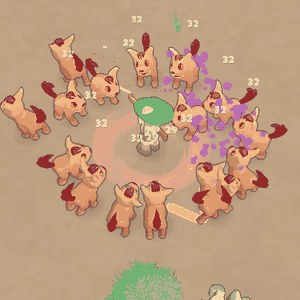
MỚI: cùng Magic Field, nhuộm đỏ đậm.
evo.meteorstorm
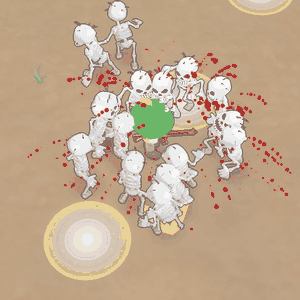
Như Meteor. Điểm rơi báo trước bằng Magic Circle Epic Toon.
evo.plague
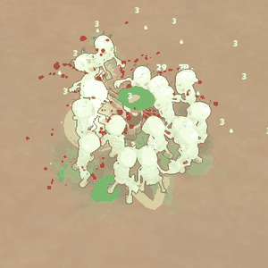
Dây nối độc dùng material sét Epic Toon.
evo.reaper
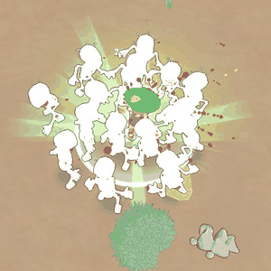
Nón nét tím tự chế: bỏ, còn Soul Explosion Epic Toon.
evo.singularity
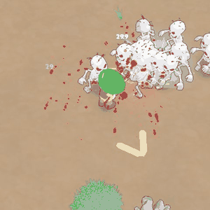
Đĩa tối tự chế: bỏ. Vòng nổ là Nova hồng Epic Toon.
evo.supercell
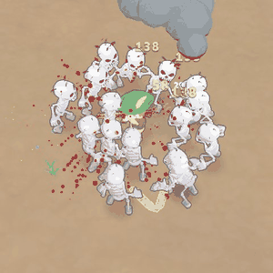
Tia sét dùng material Epic Toon.
evo.thunderstorm
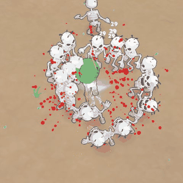
Tia sét dùng material Epic Toon, bỏ vòng nét.
impact_bone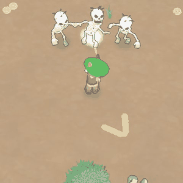
Trúng đạn: xương ra bụi trắng (HitDustExplosion), âm thanh xương có sẵn.
impact_flesh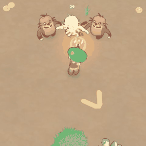
Trúng đạn: thịt ra máu (Blood Explosion). Đất ra bụi đất; gỗ/đá/kim loại/kính đã có sẵn cho prop có collider.
impact_fur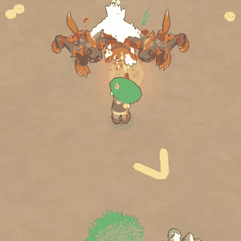
Trúng đạn: thú lông ra máu (Blood Round), âm thanh lông.
impact_plant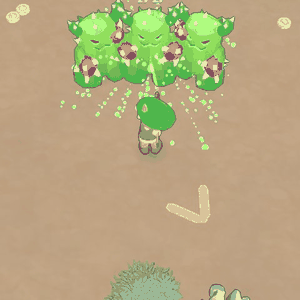
Trúng đạn: xương rồng ra nhựa xanh (Green Blood), âm thanh thực vật.
lmg.shockwave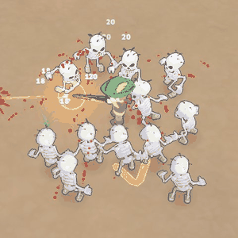
Nón nét tự chế thành Sword Wave Epic Toon.
rocket.cluster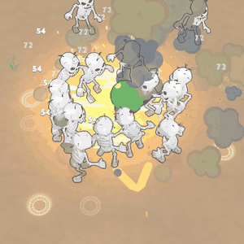
Vòng nét sau nổ: bỏ.
rocket.napalm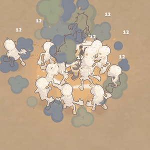
Đĩa cam tự chế: bỏ, còn Fire Field Epic Toon.
sidearm.rungun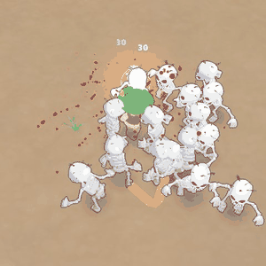
Vòng xanh dưới chân thành bụi Dust Epic Toon.
uni.explosive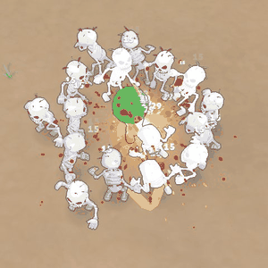
Vòng nét tự chế: bỏ, còn Small Explosion Epic Toon.
uni.guardian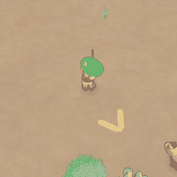
Quay thật: máu còn 1, quái đánh, thẻ cứu người chơi ở cuối clip (Heal Big + Magic Nova vàng Epic Toon).